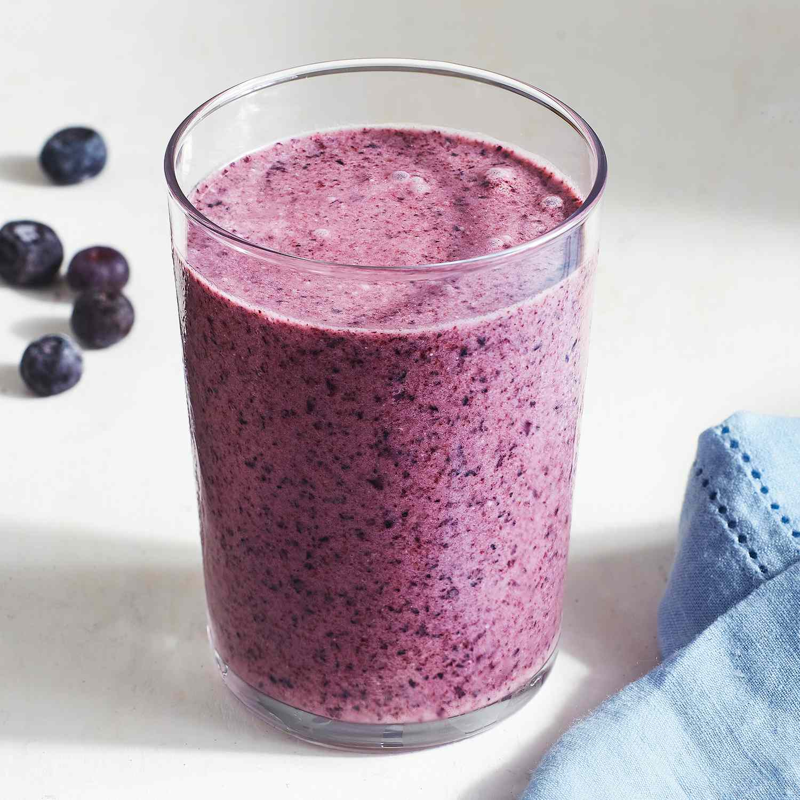

A Refreshing Smoothie.

A refreshing and healthy blueberry smoothie.
Blueberries are a great smoothie emphasis when paired with healthy, low flavor greens (like spinach). They are full of anti-oxidants and, when ripe, have a mild, fruity flavor. To add this to your breakfast routine, you'll need:
- A half-cup of ripe blueberries, fresh or frozen
- One banana
- A half cup of spinach
- An ecoologically sound milk substitute (soy or oat)
- Protein, powdered, if desired.
Steps:
- Place all ingredients in a blender.
- Blend.
- Serve.